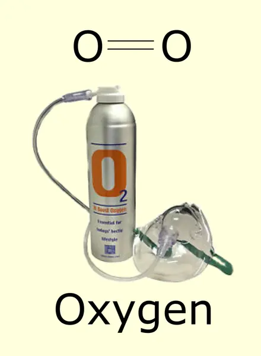
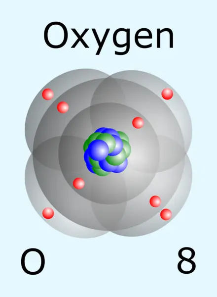
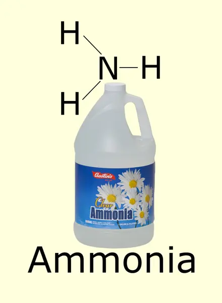
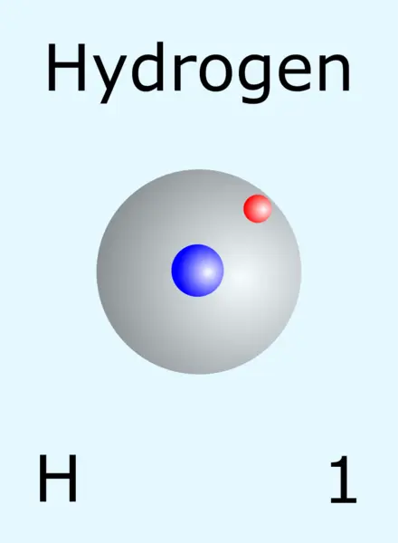
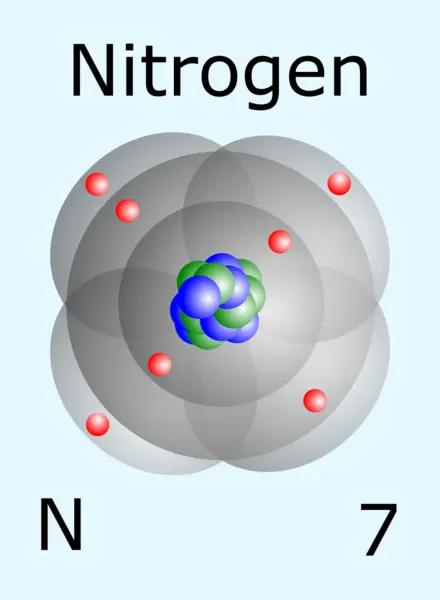
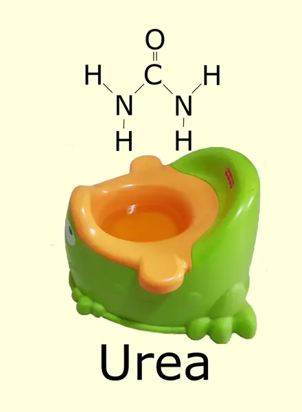
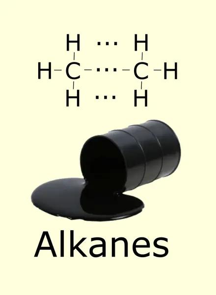
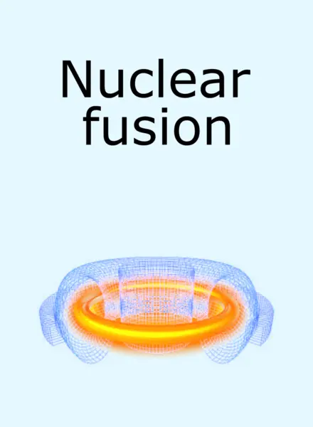

The game is for 2–6 players, aged 6 and up.
What is in the box
- 72 atom cards, of five kinds, in blue.
- 36 molecule cards, of nineteen kinds, in yellow.
Setting up
Shuffle the atom cards and deal 12 to each player. The rest are placed in a pile, which is the atom deck.
Shuffle the molecule cards and deal 3 to each player. The rest are placed in a pile, which is the molecule deck.
In the online game the host can set, before the game begins, how many cards of each kind every player is dealt.
The aim
To get rid of all your atom cards. The first player to do so wins.
Playing
The first player reveals one of his molecule cards, says its name and puts it in the game area. He then lays one of his atom cards that appears in that molecule.
From then on the players, in turn, put molecule and atom cards in the game area, by the rules set out below.
The main rule is that at every moment the game area holds one molecule card and a number of atom cards, such that together they form part of that molecule.
For example, these are legal:





And these are not:
On his turn, every player has three options:
- To lay an atom card from his hand in the game area, so that the atoms lying there form together part of the molecule on the molecule card.
- To put the molecule card that is in the game area on the discard pile, and to lay from his hand a molecule card and an atom card, so that all the atoms lying in the game area at the end of his turn form part of the new molecule he laid.
- To take an atom card from the deck.
For example, if these cards are lying in the game area
then a player holding

may lay an atom card
or else put the molecule card in the game area, ammonia in this case, on the discard pile, and lay a molecule card and an atom card
Finishing a molecule and starting the next
When a player finishes assembling a molecule, the molecule card goes to the molecule discard pile and the atom cards to the atom discard pile. Every player who took part in building the molecule may now take back one of the cards he laid.
The player who finished the molecule then has three options:
- To start a new molecule in the way described earlier. The players then carry on assembling it as before.
- To take 5 molecule cards from the deck, keep one of them and put the rest on the molecule discard pile.
- To take 5 atom cards from the deck, keep one of them and put the rest on the atom discard pile.
If he chooses the second or the third, the turn passes to the next player, who may choose among the same three, and so on.
The special cards
Beginners are advised to take these out of the deck and play without them at first. Here they need not be taken out by hand: the host ticks “Without the special cards” in the waiting room, before any deal, and they never enter the deck.
The alkanes card

When a player lays a molecule card that says "Alkanes", he must declare how many carbon atoms the alkane he is building has. From that moment the card is treated as standing for the alkane with that number of carbon atoms, and with the matching number of hydrogen atoms: twice the number of carbon atoms, plus two.
| Carbon atoms | 1 | 2 | 3 | 4 | 5 | 6 | 7 | 8 |
|---|---|---|---|---|---|---|---|---|
| Hydrogen atoms | 4 | 6 | 8 | 10 | 12 | 14 | 16 | 18 |
The nuclear fusion card

A nuclear fusion card is an atom card. It is laid together with a number of ordinary atom cards, one of them being enough, and they stand in place of a single atom card whose atomic number is the sum of the atomic numbers of the cards laid with it. The atomic number is the number at the bottom of an atom card, beside its name.
Once a molecule has been completed, a player who laid a nuclear fusion card may not take it back.
| Atom | Symbol | Atomic number |
|---|---|---|
| Hydrogen | H | 1 |
| Carbon | C | 6 |
| Nitrogen | N | 7 |
| Oxygen | O | 8 |
Notes
- A player who finishes his cards in the middle of assembling a molecule is the winner, and there is no need to go on assembling it, unless the game is carried on to settle second place.
- The game is played with each player's cards visible to him alone.
- When a deck runs out, the discard pile is shuffled, placed face down, and becomes the new deck.
- If the deck runs out while a molecule is being built and there are no used cards either, the turn passes to the next player without his having to take a card. If a whole round goes by without any player laying a card, all the cards in the game area go to the discard pile, the turn passes to the last player who laid an atom card, and he plays by the rules set out under "Finishing a molecule and starting the next". This rule is there to keep the game from getting stuck.
A tip
Try to get rid of the oxygen atoms. They are the hardest to be rid of.

Thank you!